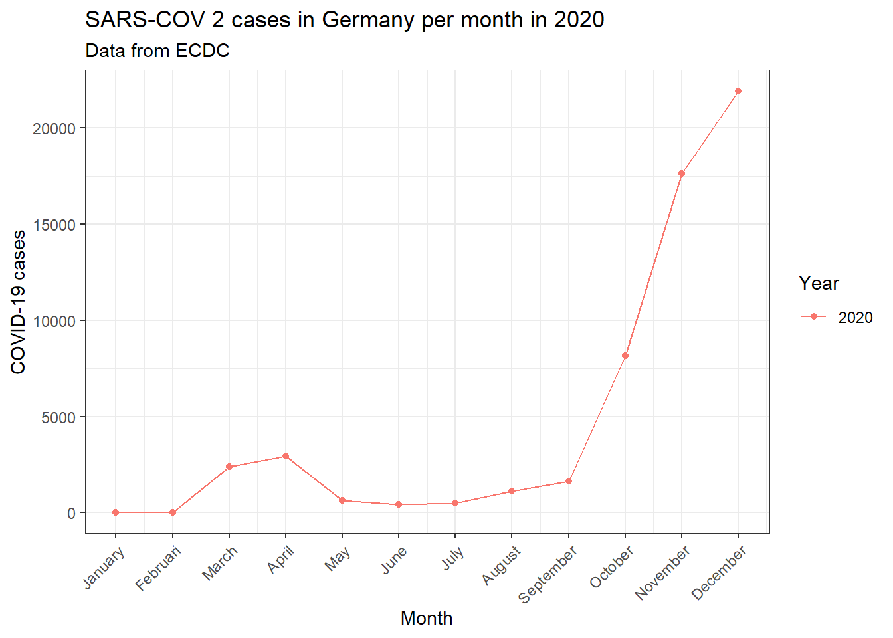

SQL
Front page Data visualisation Directory structure SQL R-package Bibliography Reproductibility CV The future
In order to prove my skills in the field of data handling and SQL, this page will show me work with flu data, dengue data and the gapminder data from the {dslabs} package. The flu data and dengue data are both supplied by google, “www.google.org/flutrends AND www.google.org/denguetrends”
First of all, all datasets will be read and inspected in R
#The gapminder dataset
gapminder %>% head()## country year infant_mortality life_expectancy fertility population gdp continent region
## 1 Albania 1960 115.40 62.87 6.19 1636054 NA Europe Southern Europe
## 2 Algeria 1960 148.20 47.50 7.65 11124892 13828152297 Africa Northern Africa
## 3 Angola 1960 208.00 35.98 7.32 5270844 NA Africa Middle Africa
## 4 Antigua and Barbuda 1960 NA 62.97 4.43 54681 NA Americas Caribbean
## 5 Argentina 1960 59.87 65.39 3.11 20619075 108322326649 Americas South America
## 6 Armenia 1960 NA 66.86 4.55 1867396 NA Asia Western Asiadengue<-read.csv("./data.raw/dengue_data.csv", skip = 10)
#The dengue dataset
dengue %>% head()## Date Argentina Bolivia Brazil India Indonesia Mexico Philippines Singapore Thailand Venezuela
## 1 2002-12-29 NA 0.101 0.073 0.062 0.101 NA NA 0.059 NA NA
## 2 2003-01-05 NA 0.143 0.098 0.047 0.039 NA NA 0.059 NA NA
## 3 2003-01-12 NA 0.176 0.119 0.051 0.059 0.071 NA 0.238 NA NA
## 4 2003-01-19 NA 0.173 0.170 0.032 0.039 0.052 NA 0.175 NA NA
## 5 2003-01-26 NA 0.146 0.138 0.040 0.112 0.048 NA 0.164 NA NA
## 6 2003-02-02 NA 0.160 0.202 0.038 0.049 0.041 NA 0.163 NA NAflu<-read.csv("./data.raw/flu_data.csv", skip = 10)
#The flu dataset
flu %>% dplyr::select(Date:Japan) %>% head() #Selected till Japan for a cleaner table## Date Argentina Australia Austria Belgium Bolivia Brazil Bulgaria Canada Chile France Germany Hungary Japan
## 1 2002-12-29 NA NA NA NA NA 174 NA NA NA NA NA NA NA
## 2 2003-01-05 NA NA NA NA NA 162 NA NA NA NA NA NA NA
## 3 2003-01-12 NA NA NA NA NA 174 NA NA 1 NA NA NA NA
## 4 2003-01-19 NA NA NA NA NA 162 NA NA 0 NA NA NA NA
## 5 2003-01-26 NA NA NA NA NA 131 NA NA 0 NA NA NA NA
## 6 2003-02-02 136 NA NA NA NA 151 NA NA 0 NA NA NA NABoth the flu and the dengue datasets are not tidy: Each row contains the incidence rate (observation) of dengue/flu of multiple countries, while each row is only supposed to have 1 observation. The datasets will be wrangled to be tidy
dengue_tidy<-dengue %>% pivot_longer(cols = Argentina:Venezuela,
names_to = "country",
values_to = "dengue_incidence")
dengue_tidy %>% head()## # A tibble: 6 x 3
## Date country dengue_incidence
## <chr> <chr> <dbl>
## 1 2002-12-29 Argentina NA
## 2 2002-12-29 Bolivia 0.101
## 3 2002-12-29 Brazil 0.073
## 4 2002-12-29 India 0.062
## 5 2002-12-29 Indonesia 0.101
## 6 2002-12-29 Mexico NAflu_tidy<-flu %>% pivot_longer(cols = Argentina:Uruguay,
names_to = "country",
values_to = "flu_incidence")
flu_tidy %>% head()## # A tibble: 6 x 3
## Date country flu_incidence
## <chr> <chr> <int>
## 1 2002-12-29 Argentina NA
## 2 2002-12-29 Australia NA
## 3 2002-12-29 Austria NA
## 4 2002-12-29 Belgium NA
## 5 2002-12-29 Bolivia NA
## 6 2002-12-29 Brazil 174Now the data is tidy, however, to make the dengue/flu data relational, the “date” data needs to be properly synchronized. To do this, the “date” will be split into “year”, “month” and “day”. These will be changed from character vectors to integers
flu_separate<-flu_tidy %>% separate(col = Date, into = c("year", "month", "day"))
flu_separate$year<-flu_separate$year %>% as.integer()
flu_separate$month<-flu_separate$month %>% as.integer()
flu_separate$day<-flu_separate$day %>% as.integer()
dengue_separate<-dengue_tidy %>% separate(col = Date, into = c("year", "month", "day"))
dengue_separate$year<-dengue_separate$year %>% as.integer()
dengue_separate$month<-dengue_separate$month %>% as.integer()
dengue_separate$day<-dengue_separate$day %>% as.integer()Now, with the data properly relational, it’ll be written into .csv’s and .rds’
flu_separate %>% write.csv(file = "./data/flu.csv")
flu_separate %>% write_rds(file = "./data/flu.rds")
dengue_separate %>% write.csv(file = "./data/dengue.csv")
dengue_separate %>% write_rds(file = "./data/dengue.rds")
gapminder %>% write.csv(file = "./data/gapminder.csv")
gapminder %>% write_rds(file = "./data/gapminder.rds")Using the SQL script shown in the screenshot below, a SQL database has been created called “workflowsdb”.

Using RPostgreSQL, the created datasets will be inserted into this database
source(here("R/login_credentials.R"))
con <- dbConnect(RPostgres::Postgres(),
dbname = "workflowsdb",
host = "localhost",
port = 5432,
user= "postgres",
password = rawToChar(pwd))
dbWriteTable(con, "gapminder", gapminder)
dbWriteTable(con, "dengue", dengue_separate)
dbWriteTable(con, "flu", flu_separate)To inspect the database in order to check if all data has been transfered correctly, another SQL script has been used. Once again, screenshots of this script have been added underneath.

For further insurance, the data will also be inspected via R
source(here("R/login_credentials.R"))## as.raw(c(0x40, 0x53, 0x74, 0x75, 0x6e, 0x5f, 0x4c, 0x34, 0x6e,
## 0x63, 0x33, 0x72, 0x40))con <- dbConnect(RPostgres::Postgres(),
dbname = "workflowsdb",
host = "localhost",
port = 5432,
user= "postgres",
password = rawToChar(pwd))
gapminder<-dbReadTable(con, "gapminder")
gapminderyear_unique<-gapminder$year %>% unique()
dengue<-dbReadTable(con, "dengue")
dengueyear_unique<-dengue$year %>% unique()
flu<-dbReadTable(con, "flu")
fluyear_unique<-flu$year %>% unique
flu_dengue_year<-fluyear_unique == dengueyear_unique
table(flu_dengue_year) # TRUE means that the years between flu and dengue are the same, FALSE means ## flu_dengue_year
## TRUE
## 14 #that there's a year that's not the same
gapminder_dengue_year<-gapminderyear_unique == dengueyear_unique
table(gapminder_dengue_year) # TRUE means that the years between flu/dengue and gapminder are the ## gapminder_dengue_year
## FALSE TRUE
## 43 14 #same, FALSE means that there's a year that's not the same
flu_dengue_countries<-flu$country %>% unique() == dengue$country %>% unique()
table(flu_dengue_countries) # TRUE means that the countries between flu and dengue are the same, ## flu_dengue_countries
## FALSE TRUE
## 28 1 #FALSE means that there's a country in 1 dataset that isn't in the other
flu_dengue_gapminder_countries<-dengue$country %>% unique() == gapminder$country %>% unique()
table(flu_dengue_gapminder_countries) # TRUE means that the countries between flu/dengue and gapminder ## flu_dengue_gapminder_countries
## FALSE TRUE
## 183 2 # are the same, FALSE means that there's a country in 1 dataset
# that isn't in the otherBased on these inspections, we have seen that:
Gapminder contains a bigger range of years than flu/dengue
Gapminder contains a bigger range of countries than flu/dengue
Flu/dengue both contain the exact same countries and years
Since the year/country columns are (partly) the same between gapminder and dengue/flu, we can join these datasets. However, in order to create a full dataset, we must filter for years and countries which are present in all datasets
dengue_countries<-dengue$country %>% unique()
dengue_flu_countries<-flu$country %>% str_extract(pattern = dengue_countries) %>% unique()
dengue_flu_countries<-dengue_flu_countries[!is.na(dengue_flu_countries)] #Filtering for NA's
flu_year<-flu$year
gapminder$country %>% str_subset(pattern = dengue_flu_countries) %>% unique ## [1] "Argentina" "Brazil" "Mexico" "Bolivia"#The 4 countries present in every data set: Argentina, Brazil, Mexico, Bolivia
gapminder_join<-gapminder %>% filter(year <= max(flu_year) & year >=min(flu_year)) %>%
filter(country %in% dengue_flu_countries)
data_full<-left_join(gapminder_join, dengue, by = c("country", "year")) %>% left_join(flu, by = c("country", "year", "month", "day"))
data_full %>% head()## country year infant_mortality life_expectancy fertility population gdp continent region month day dengue_incidence flu_incidence
## 1 Argentina 2002 17.1 74.3 2.38 37889443 242076212334 Americas South America 12 29 NA NA
## 2 Bolivia 2002 53.7 68.7 3.98 8653343 8751510220 Americas South America 12 29 0.101 NA
## 3 Brazil 2002 24.3 71.4 2.26 181045592 670512665737 Americas South America 12 29 0.073 174
## 4 Mexico 2002 19.3 74.9 2.57 105578297 585312691416 Americas Central America 12 29 NA NA
## 5 Argentina 2003 16.6 74.5 2.34 38309475 263468585945 Americas South America 1 5 NA NA
## 6 Argentina 2003 16.6 74.5 2.34 38309475 263468585945 Americas South America 1 12 NA NANow, with this fully joined dataset, we’ll perform some data visualisations.
Firstly, dengue incidence in 4 countries over 15 years
data_sum_dengue<-data_full %>% group_by(country, year) %>%
summarise(mean=mean(dengue_incidence, na.rm=TRUE),
stdev=sd(dengue_incidence))## `summarise()` has grouped output by 'country'. You can override using the `.groups` argument.data_sum_dengue %>% ggplot(aes(x=year, y=mean))+
geom_point(aes(color = country))+
geom_line(aes(color = country))+
labs(
title="Dengue incidence over 12 years in 4 countries",
x="Time in years",
y="incidence (unit not mentioned)"
)+
theme_bw()
Secondly, the incidence of flue through the months in the 4 different countries
month_data<-data.frame(
month=seq(1:12),
MONTH=c("January", "Februari", "March", "April", "May", "June", "July", "August", "September", "October", "November", "December")
)
month_data$MONTH<-factor(month_data$MONTH, levels =c("January", "Februari", "March", "April", "May", "June", "July", "August", "September", "October", "November", "December"))
data_month<-left_join(data_full, month_data, by="month")
data_month %>% ggplot(aes(x=MONTH, y=flu_incidence))+
geom_col(aes(fill=country), position = position_dodge())+
labs(
title="Flu incidence by month in 4 countries",
x="Month",
y="Incidence (unit not mentioned)"
)+
theme_bw()+
theme(axis.text.x = element_text(angle=45, hjust=1))And finally, a correlation between dengue incidence and flu incidence? (Spoiler: no. Not at all.)
correlation<-cor.test(data_full$dengue_incidence, data_full$flu_incidence, method=c("pearson"))$estimate %>% round(digits = 3)
data_full %>% ggplot(aes(x=flu_incidence, y=dengue_incidence))+
geom_point(aes(color=country), alpha = 0.8)+
labs(
title="Correlation between flu incidence and dengue incidence",
y="Flu incidence (unit not mentioned)",
y="Dengue incidence (unit not mentioned"
)+
annotate("text", x=2600, y=0.95, label = paste0("Pearson's correlation: \n", correlation))+
theme_bw()